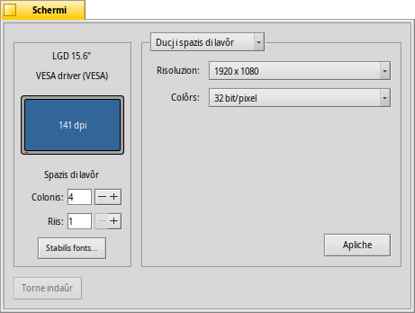

Schermi
Schermi
| Deskbar: | ||
| Posizion: | /boot/system/preferences/Screen | |
| Impostazions: | ~/config/settings/system/app_server/workspaces ~/config/settings/kernel/drivers/vesa - Dome cuant che si è in modalitât VESA. ~/config/settings/Screen_data - Al archivie la posizion dal barcon dal panel. |
Ogni spazi di lavôr al pues vê la sô risoluzion, la sô profonditât di colôr e la sô frecuence di inzornament.
Il menù parsore al specifiche se si aplicarà lis modifichis dome al spazi di lavôr atuâl o a ducj. In base ae tô schede grafiche, i altris menù a contegnin lis impostazions pes risoluzions supuartadis, pe profonditât di colôr e pe frecuence di inzornament dal visôr.
Dopo vê fat clic su , la modalitât grafiche e ven cambiade e al vignarà fûr un avîs, che ti domandarà se tignî o anulâ lis modifichis. Se no si rispuint a chel avîs, la modalitât grafiche e torne indaûr aes impostazions precedentis daspò passâts 12 seconts. Magari no tu rivis a viodi l'avîs par vie che il visôr nol supuarte chê impostazion.
E je une cumbinazion di tascj che e funzione simpri, no dome cuant che si sta tes preferencis dal Schermi: MAIUSC CTRL ALT ESC al stabilìs une modalitât video sigure di repeç. Util se il visôr nol comuniche ben lis sôs capacitâts e duncje lis tôs impostazions ti puartin a vê un schermi neri o imberlât. Ancje chì, al ven fûr un avîs e se no tu fasis nuie par 12 seconts o tu frachis ESC si tornarà indaûr.
De bande di çampe dal barcon, tu puedis viodi une rapresentazion dal to schermi cul produtôr e il model (che il visôr al à comunicât) e la sô risoluzion in ponts par once (dot per inch - dpi). Al mostre ancje il non de schede grafiche se e je supuartade di un driver. In câs contrari al dîs "VESA", la soluzion di repeç rapide che e funzione su cuasi dut l'hardware.
al puarte indaûr aes impostazions che a jerin ativis cuant che si à inviât lis preferencis dal Schermi.
In bas a çampe tu puedis stabilî il numar dai spazis di lavôr la lôr disposizion in riis e colonis e vierzi lis preferencis dal Fonts.